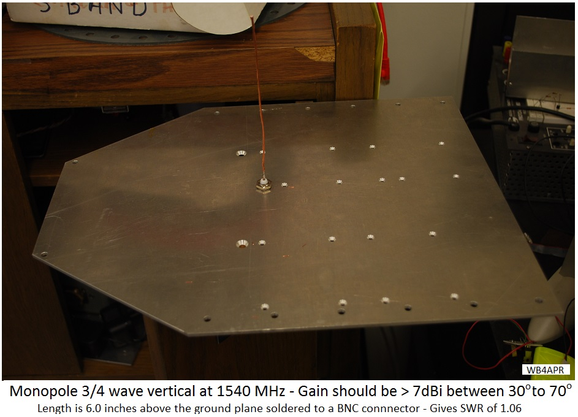
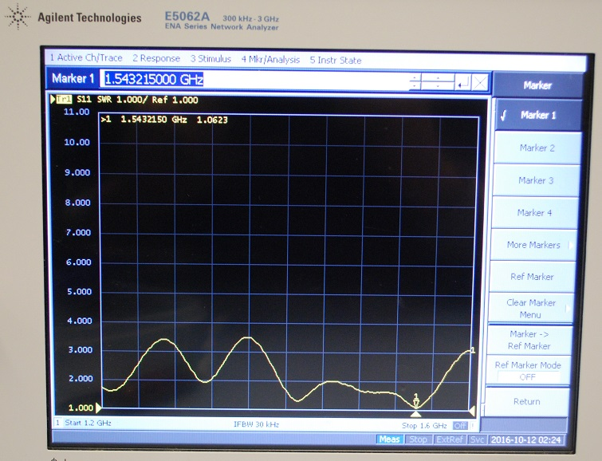
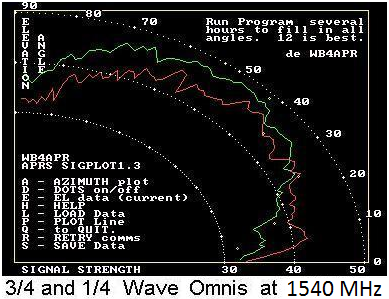
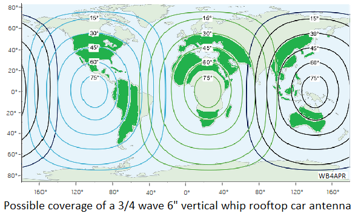
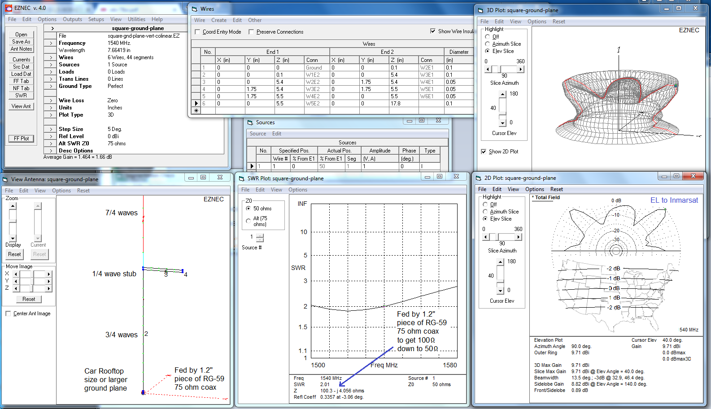

for Outernet L-band downlink reception
Bob Bruninga, WB4APR lastname@usna.edu
Searching for the ideal Mobile Omni antenna for Inmarsat: By extending the typical 1/4 wave vertical antenna to odd multiples of quarterwaves, the gain increases but also the elevation angle of maximum gain. The 3/4 wave vertical has an excellent antenna pattern at 45 degrees elevation angle, but only 7.5 dBi gain which is about 3 dB shy of enough to reliably receive the Outernet signal compared to their the L band patch antenna. The vertical is only a linear antenna so it theoretically loses another 3 dB due to loss of the other polarization. Lengthening the vertical to get more gain also raises the main lobe. By the time you get the needed gain, the elevation angle is 55 degrees which would only be usable down in Mexico!
I built a quick 3/4 wave vertical as shown that is exactly 6.0 inches tall as measured from the ground plane. It is #14 wire soldered to a BNC connector. The ground plane in this case was just a random piece of Aluminum that I had that already had a BNC sized hole in it. As you can see, this ground plane is probably about two wavelengths across. The actual antenna pattern will give the maximum gain in the desired upward direction the larger the ground plane. Meaning, a small ground plane will give the same good SWR but more of the pattern is directed downward. Only by having an "infinite" ground plane will the full upward gain be fully realized. Of course, a car roof that is 4 feet square or so is a ground plane nearly 6 wavelengths wide and is probablly close enough.
 . . . 
Above right shows that the SWR is an excellent 1.06 at the Inmarsat 1.540 GHz downlink. The plot goes from 1.2 to 1.6 GHz.
Not enough gain: The antenna "worked" but it was below threshold for reliable decoding, In fact, it could hardly receive any files, though it did seem to keep lock on the satellite.
The plot below shows the actual measured elevation antenna pattern of a 3/4 wave antenna I tried years ago for GPS. GPS is at 1575 MHz where Outernet is at 1540, so trimming to the righ length should give similar results. I ran the GPS collecting signal strength data on all GPS satellites for 24 hours, then plotting the reported individual satellite elevation angle and reported signal strength. The test was done again with just a nominal 1/4 wave whip (in red) to serve as a comparison. The difference is relative to signal stength as reported by this particular GPS and is not calibrated in real dB. But it clearly shows the added gain of the 3/4 wave antenna above 30 degrees with a max around the theoretical 45 degrees.
 . . . 
The plot above right shows the estimated coverage areas where mobiles can see the Inmarsats between the elevation angles of 30 to 70 degrees.
Try a 5/4 Wave Antenna! If your operation is lower in latitude such that the Inmarsat is above 45 degrees, then you can pick up another dB with a longer 5/4 wave antenna. Theoretically, this should add another dB up to about 8.5 dBi linear gain. The EZNEC models are shown above.
Vertical Colinear: But for my mobile in Maryland, I need to get the main lobe of the conical antenna pattern down to 40 degrees. Here is the best I have found so far. (Though I have not built it yet)...

This one stacks a multi quarterwave colinear antenna on top of a 3/4 wave vertical to try to get the max gain elevation angle down to 40 degrees and I got it to 100 ohms which should be easy to match with a 1/4 wave of 75 ohm coax (about 1.2" long). FOr people further south, it is easy making just a long 7/4 or 9/4 wave antenna to get high gain, but the elevation angle approaches 55 degrees which would only be useful in Mexico. So the one above tries to bring the elevation angle down to 40. And it must be in the middle of a large ground plane like the entire roof of a car to replicate the infinite ground plane used in the model above.
Good luck!
Bob Bruninga, WB4APR
lastname at usna dot edu